Portfolio
Every project from my engineering journey at Tufts University — robotics, computer vision, CAD, structural analysis, and assistive technology.
01 — Case studies
Full write-ups with photos, videos, and code.
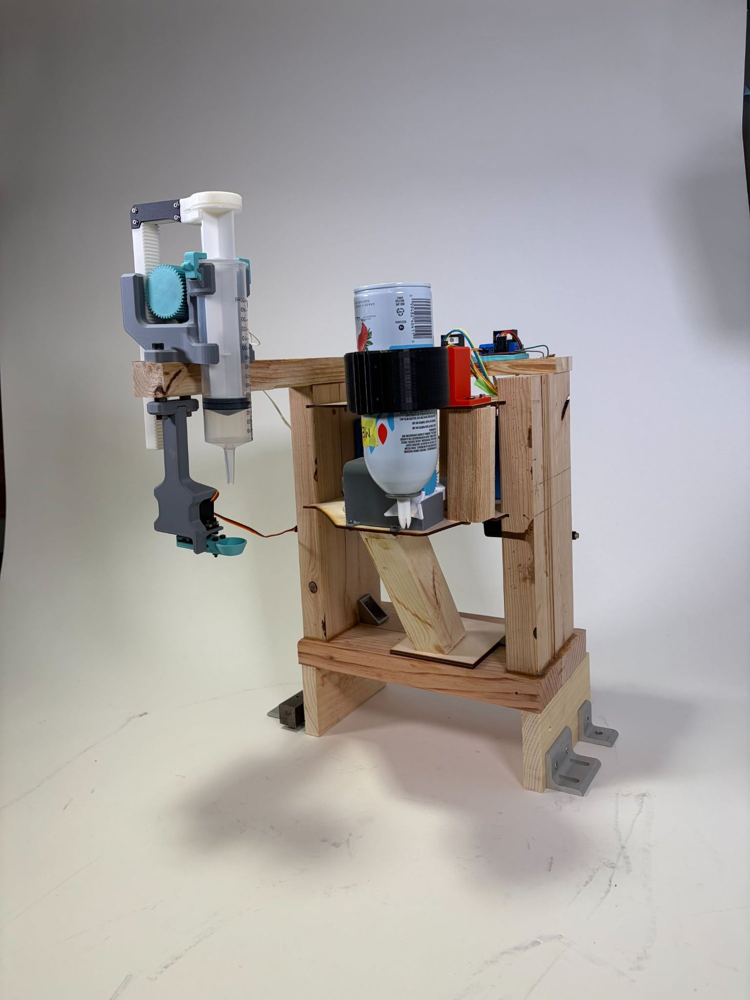
Fully automated waffle-making line: coordinated robotic stations, web-based ordering, and a mobile Create 3 platform tying it all together.
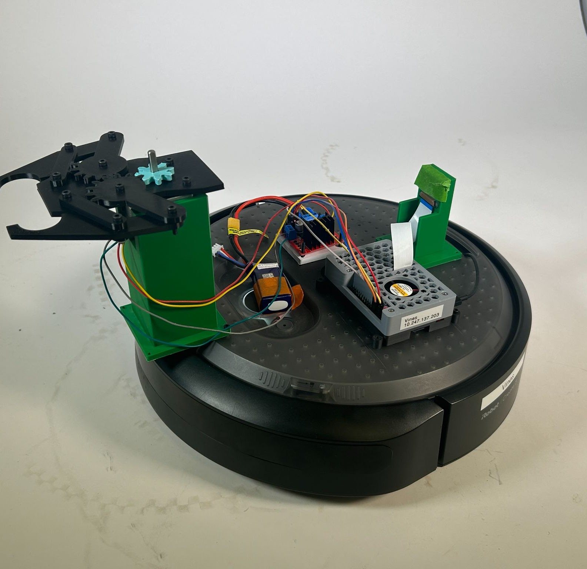
Autonomous warehouse-style pick-and-place robot that identifies characters with a neural network and delivers them without human intervention.
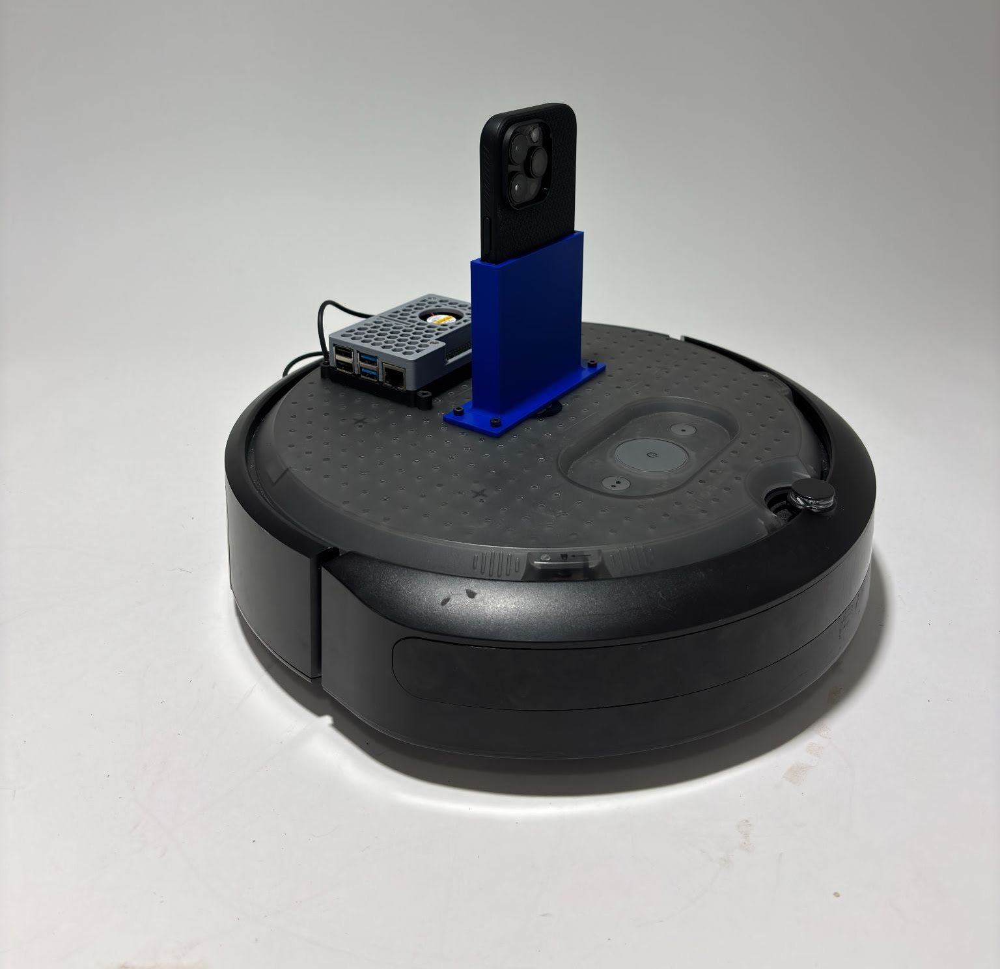
Remote teleoperation of an iRobot Create 3 through a maze, using Airtable as a real-time command bus with live camera feedback.
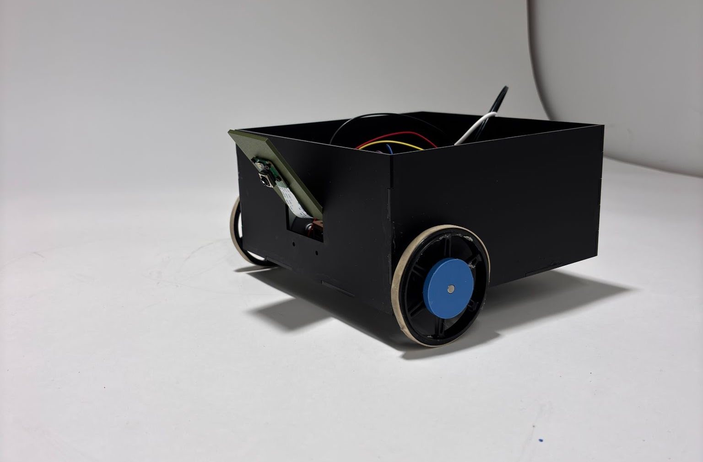
Autonomous robot that tracks a line using a Raspberry Pi camera and OpenCV computer vision, with a search routine for lost-line recovery.
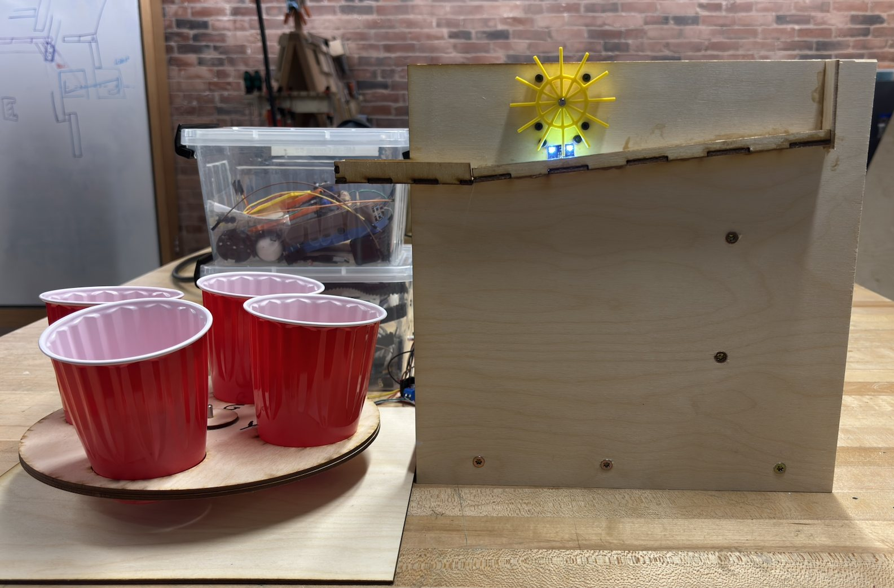
Autonomous system that sorts randomly mixed colored balls into color-specific outputs using a color sensor and dual stepper motors.
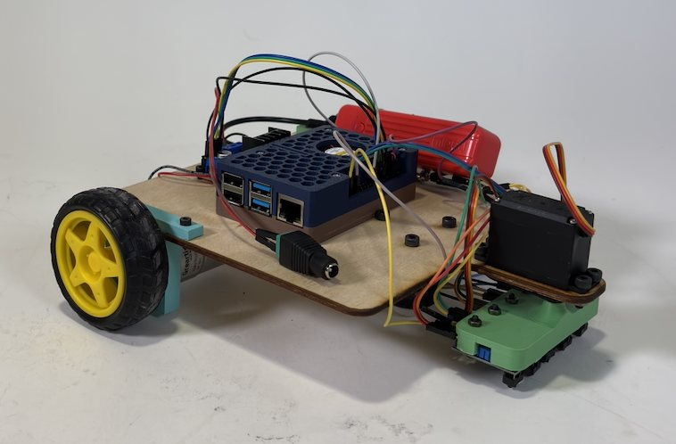
Custom-built robot that follows a path with IR sensors, reaches the end, turns around, and returns — on a fully hand-fabricated chassis.
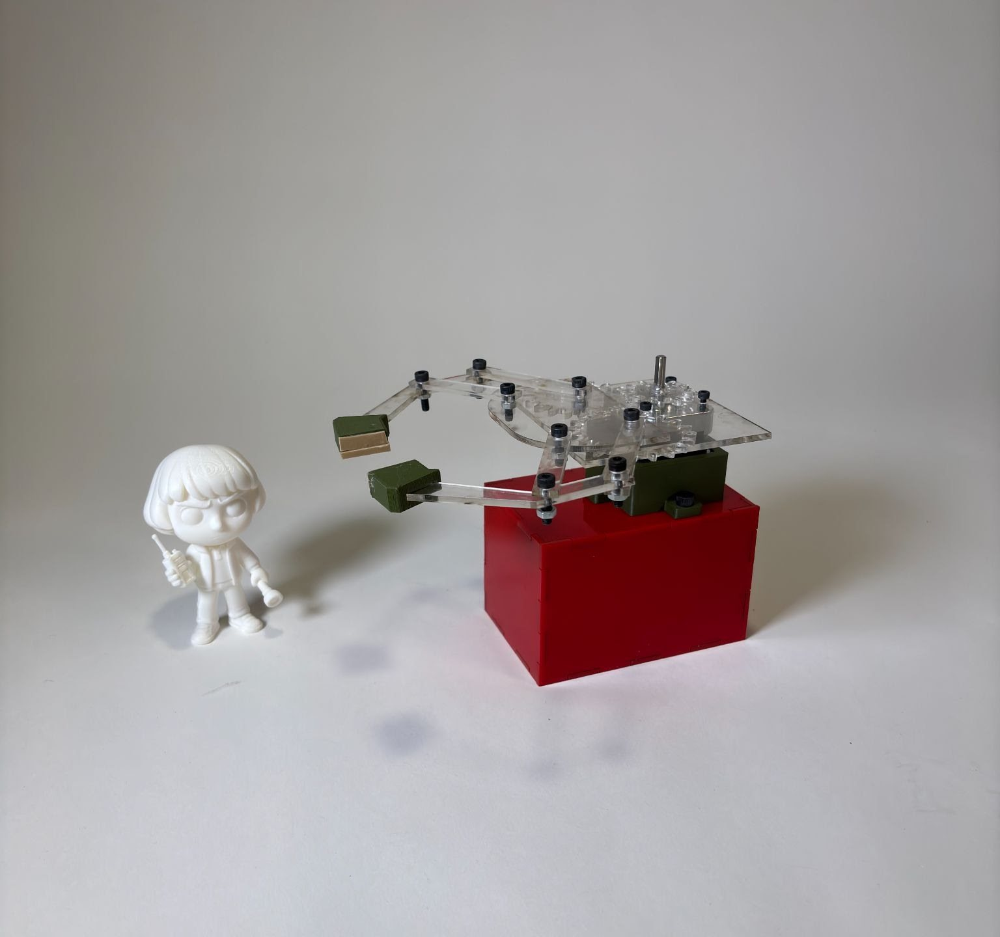
Original mechanical gripper using linkages, gears, and a stepper motor that autonomously grasps and transports a figure.
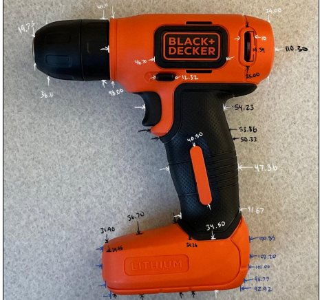
Full decomposition and study of a Black & Decker drill — documented, sorted into subsystems, and modeled in SolidWorks.
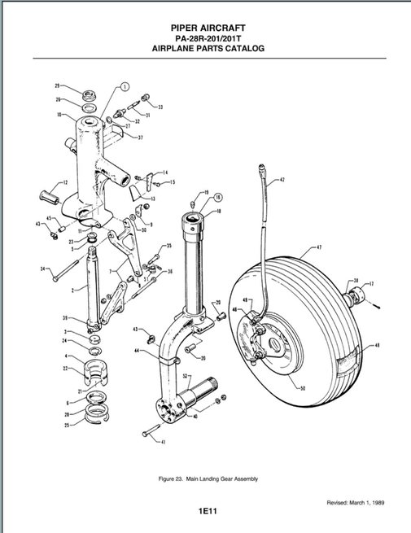
CAD decomposition of a Piper Arrow's landing gear — 52 parts and 6 assemblies modeled from the parts catalog alone, plus a Simulink simulation.
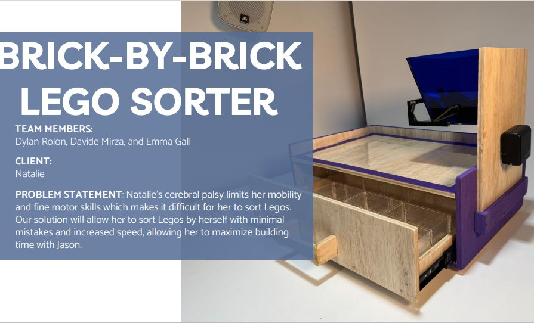
Assistive device that lets Natalie, a client with cerebral palsy, sort Legos independently — faster and with fewer mistakes.
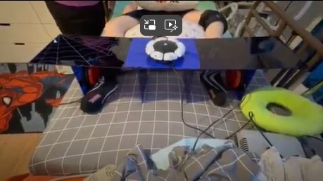
Co-designed a custom adjustable switch holder so Hamza can play his favorite PlayStation games with his feet — within a $100 budget.
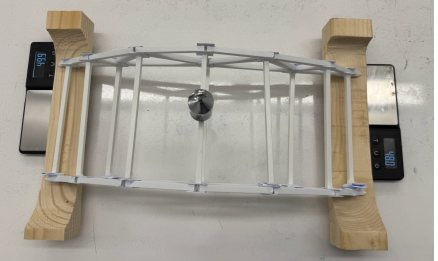
Design, build, and analysis of a statically determinate truss — hand calculations verified against MATLAB and an online solver.
02 — Archives
Earlier coursework and analysis projects, documented in detailed project reports.
A 1:1 replica of the CONAIR hair dryer, fully modeled in SolidWorks — documented in a detailed project report.
Theoretical calculation of the normal stress and deflection of a pull-up bar under a concentrated central load, compared against finite element analyses performed in ME10.
Found the net reaction forces and moments at the ankle, knee, and hip during the stance phase of the gait cycle, modeling the human body as rigid links connected through pins using inverse dynamics analysis.
Assembled a mechanism in SolidWorks with a rotary motor, compared simulated piston velocities to analytical calculations, image-processed a LEGO mechanism, and validated kinematics with a SolidWorks motion study.